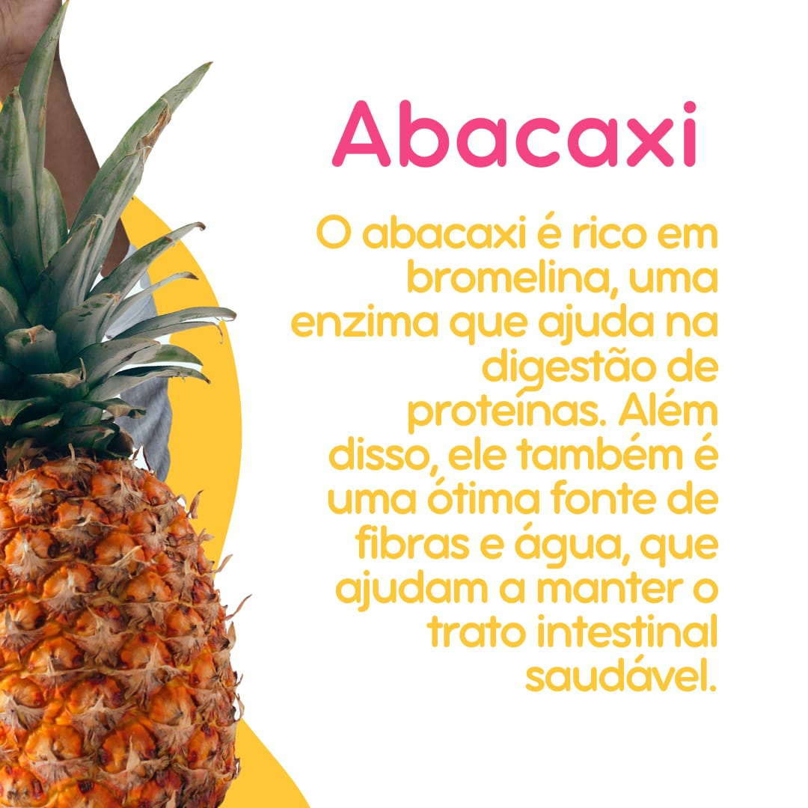
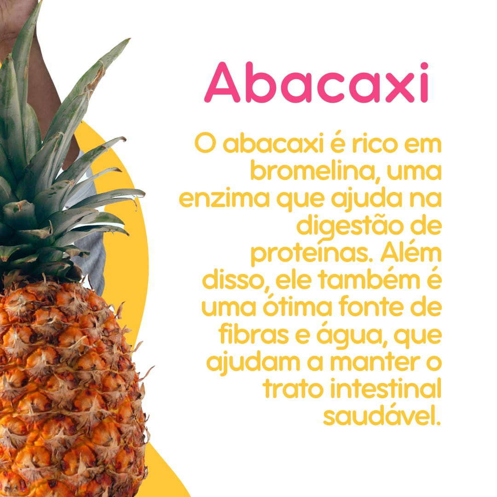

3 Alimentos que Melhoram a Digestão
Uma boa digestão é essencial para a saúde geral do corpo, e certos alimentos podem ajudar a melhorar esse
processo. Aqui estão três ótimas opções para incluir na sua dieta:
1. Abacaxi
O abacaxi contém bromelina, uma enzima que ajuda na quebra das proteínas, facilitando a digestão. Além
disso, é uma fruta rica em fibras e antioxidantes, que promovem o bom funcionamento do intestino.
2. Chá Verde
O chá verde é conhecido por seus antioxidantes, mas também pode ajudar na digestão. Ele estimula a produção
de enzimas digestivas e tem propriedades anti-inflamatórias que podem aliviar desconfortos no trato
digestivo.
3. Mamão
O mamão contém papaína, uma enzima que facilita a digestão de proteínas, assim como o abacaxi. Além disso,
suas fibras ajudam a regular o trânsito intestinal, prevenindo constipação.
Conclusão
Incluir esses alimentos na dieta pode promover uma digestão mais eficiente e aliviar problemas digestivos
comuns. Lembre-se de manter uma alimentação equilibrada e variada para garantir o bem-estar do seu sistema.
Blog da Sarah Rosner
 
